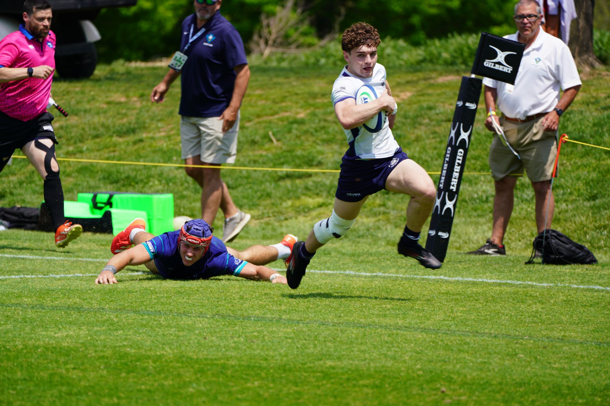
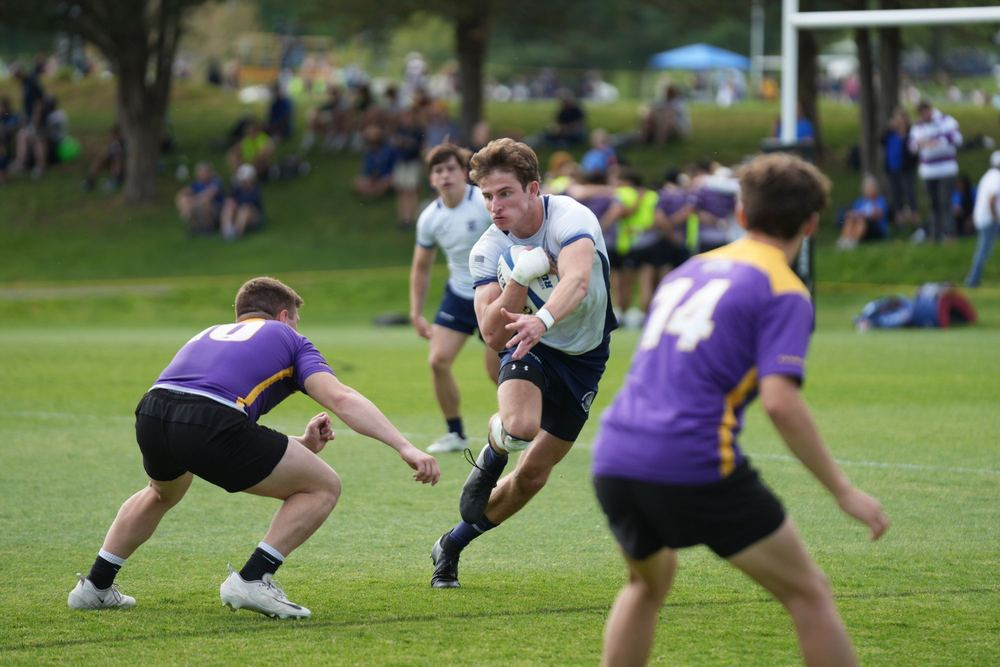
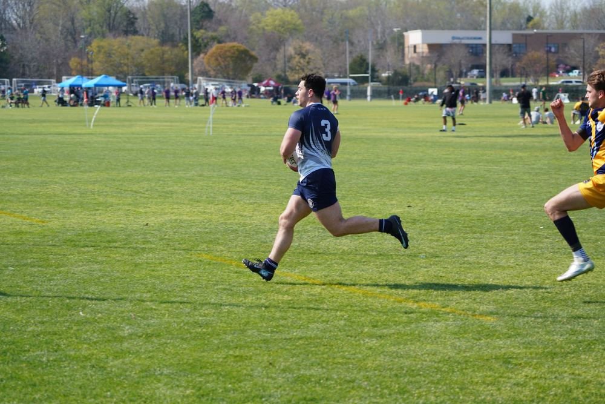
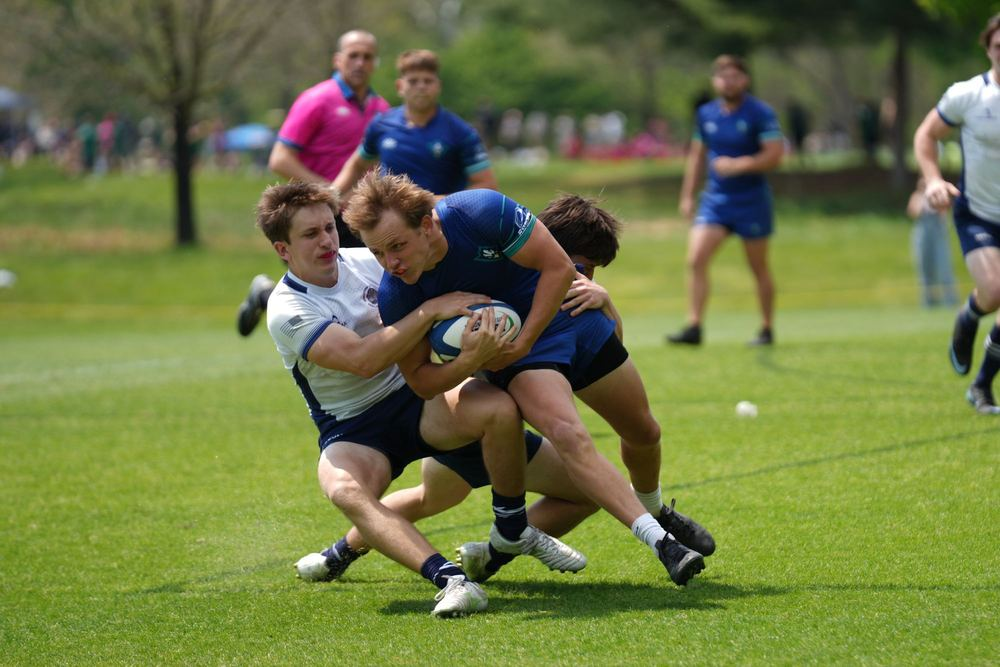
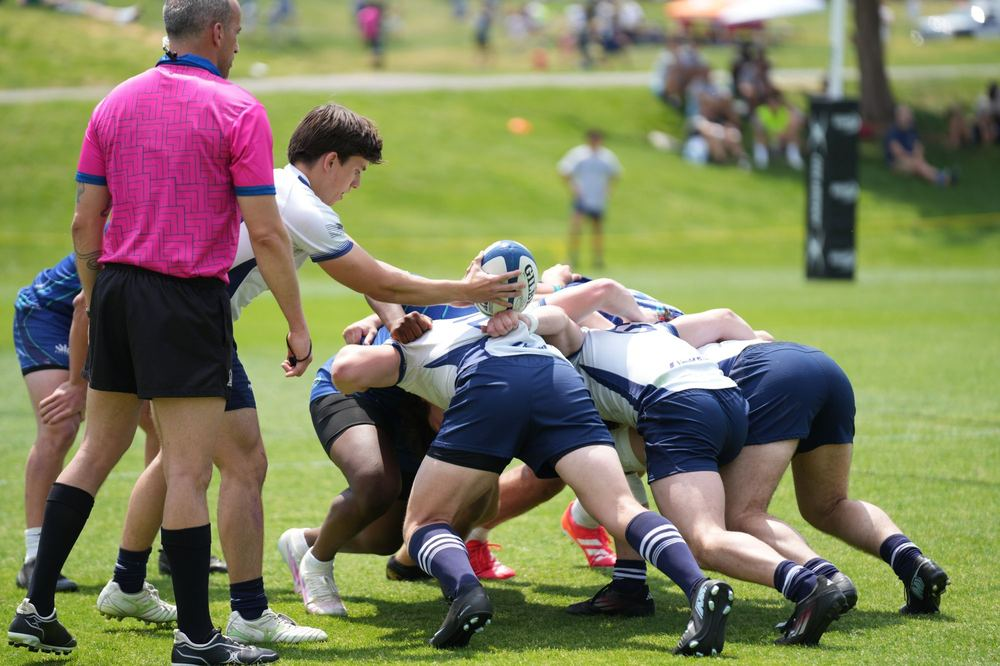
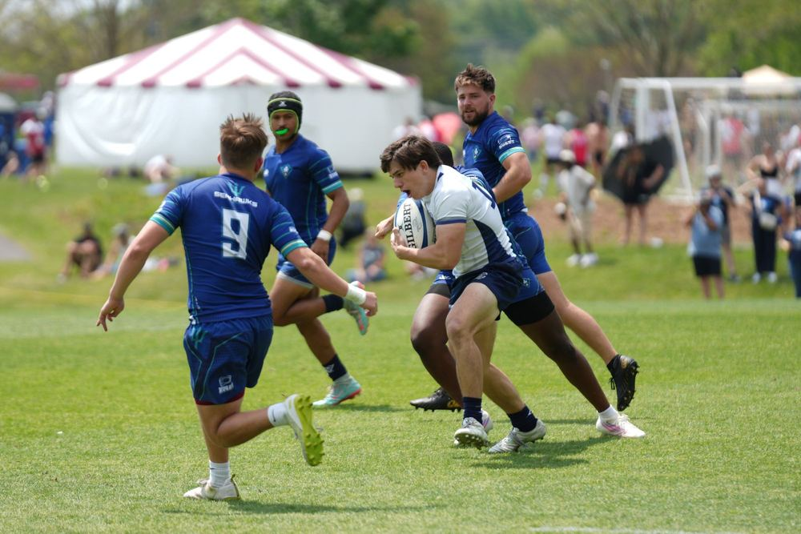
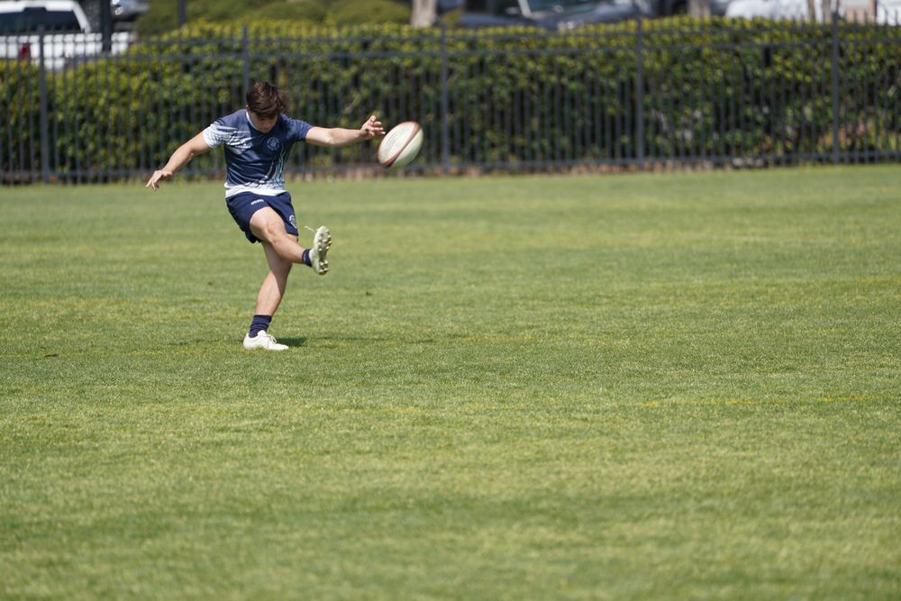

From Cooper Field to careers of impact
Feature a former player, a championship side, or reunion weekend here to keep the alumni community visible on the front page.
Division II NCR · Mid-Atlantic Rugby Conference
Founded in 1967. Fifteens in the fall, sevens in the spring, and a door that stays open to anyone willing to work.
Founded in 1967, Georgetown University Rugby Football Club carries a long tradition of hard rugby, campus pride, and lifelong connection. GURFC competes in Division II National Collegiate Rugby in the Mid-Atlantic Rugby Conference, with a fall 15s season and a spring 7s slate.
The club develops athletes and leaders through demanding practices, A-side and B-side match opportunities, and an alumni network that stays close to the program. No prior rugby experience is required, and new players are welcome throughout the year.

Recruiting
GURFC welcomes Georgetown students who want to compete, learn, and be part of a team with real history. Whether you played rugby in high school or have never touched a ball, there is a pathway onto the pitch.
Text (203) 820-0325 or email mensrugbyclub@georgetown.edu
Showing 31 players
| Name | Year | Position | Hometown / High School |
|---|
The people running training and match day.
Fifteens, sevens, and everything in between.






Alumni keep GURFC moving forward through mentorship, match-day support, fundraising, and the stories that connect each generation of Georgetown rugby.
Feature a former player, a championship side, or reunion weekend here to keep the alumni community visible on the front page.
Straight from @gurfc